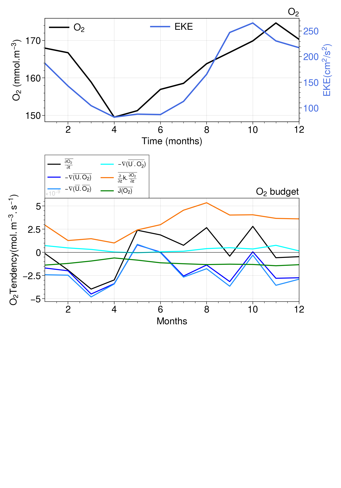
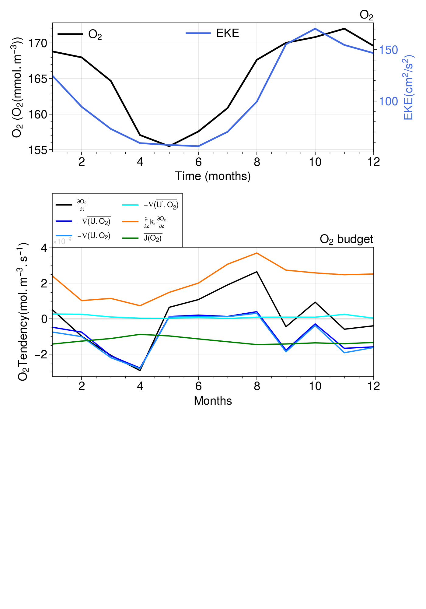

Oxygen Budget Analysis
Contents
Oxygen Budget Analysis#
This notebook analyzes the O\(_2\) budget from POP output. Dissolved oxygen in the ocean’s interior is simulated following:
\[
\frac{\partial{O_2}}{\partial{t}}= \underbrace{- \frac{\partial{U.O_2}}{\partial{x}} -\frac{\partial{V.O_2}}{\partial{y}}}_\text{Lateral Advection}
- \overbrace{\frac{\partial{W.O_2}}{\partial{z}}}^\text{Vertical Advection}
+ \underbrace{A_h.\nabla^2{O_2}}_\text{Lateral Mixing}
+\overbrace{\frac{\partial{}}{\partial{z}}k.\frac{\partial{O_2}}{\partial{z}}}^\text{Vertical Mixing}
+ \underbrace{ J(O_2) }_\text{Sources - Sinks}
\]
%load_ext autoreload
%autoreload 2
%matplotlib inline
import warnings
warnings.simplefilter("ignore") # Silence warnings
import xarray as xr
import numpy as np
from tqdm import tqdm
import xgcm
import pop_tools
import matplotlib.pyplot as plt
import matplotlib.colors as colors
import cmocean
import cartopy
import cartopy.crs as ccrs
import proplot
import matplotlib.patches as patches
from utils import *
C=CLSTR(1,15,200,10)
C
Client
Client-491db330-9507-11ec-bae3-3cecef1acb68
| Connection method: Cluster object | Cluster type: dask_jobqueue.PBSCluster |
| Dashboard: https://jupyterhub.hpc.ucar.edu/stable/user/yeddebba/proxy/35277/status |
Cluster Info
PBSCluster
181c6fba
| Dashboard: https://jupyterhub.hpc.ucar.edu/stable/user/yeddebba/proxy/35277/status | Workers: 0 |
| Total threads: 0 | Total memory: 0 B |
Scheduler Info
Scheduler
Scheduler-966fa8d9-0fb3-4b4a-a697-cce10cdf71c7
| Comm: tcp://10.12.206.46:39657 | Workers: 0 |
| Dashboard: https://jupyterhub.hpc.ucar.edu/stable/user/yeddebba/proxy/35277/status | Total threads: 0 |
| Started: Just now | Total memory: 0 B |
Workers
def plot_depth_section(ax,x,z, var,cntf,lev,clr,units,title,coords,fs,fsx,lw,alp,cb_on,profile):
if cntf==True:
cs= ax.contourf(x,z,var,levels=lev,cmap=clr,extend='both')
if cb_on==True:
cb = plt.colorbar(cs, ax=ax, orientation='vertical', extend='both',pad=0.02)#, aspect=20)
# cb.ax.set_title(units,fontsize=fs-1,pad=0.2)
cb.set_label(units, rotation=0,size=fs-2,position=(0,1.08))
cb.ax.tick_params(labelsize=fs-1)
cb.ax.minorticks_off()
if cntf==False: cs= ax.contour(x,z,var,colors=clr,linewidths=lw,levels=lev,alpha=alp)
ax.set_title(title,loc='center',fontsize=fs)
ax.set_ylim(coords[0]); ax.set_xlim(coords[1]); ax.minorticks_on();
ax.set_ylabel('Depth (m)',fontsize=fs-2);
ax.set_aspect('auto')
if profile=='lon': ax.set_xlabel('Latitude ($^{o}$N)',fontsize=fs-2)
if profile=='lat': ax.set_xlabel('Longitude ($^{o}$E)',fontsize=fs-2)
ax.set_title(title,pad=0.01,fontsize=fs, loc='center');
ax.tick_params(axis='both', labelsize=fs)
return ax
def plot_cmap(ax,lon,lat, var,vmn, vmx, stp, clr,units,title,coor,fs,fsx,lon_lab,lat_lab):
ax.set_extent(coor,crs=cartopy.crs.PlateCarree())
pc= ax.contourf(lon,lat,var,np.arange(vmn,vmx,stp),cmap=clr,transform=ccrs.PlateCarree(), extend='both') #,
land = ax.add_feature(cartopy.feature.NaturalEarthFeature('physical', 'land', '10m',linewidth=0.1, edgecolor='black', facecolor='grey'))
cb = plt.colorbar(pc, ax=ax, orientation='vertical', extend='both',pad=0.02)#, aspect=20)
cb.set_label(units, rotation=0,size=fs-3,position=(0.0,1.08))
# cb.ax.set_title(units,fontsize=fs-1,pad=0.2)
cb.ax.minorticks_off()
cb.ax.tick_params(labelsize=fs)
ax.set_aspect('auto')
ax.set_title(title,loc='center',fontsize=fs)
gl=ax.gridlines(draw_labels=True)
gl.xlabel_style = {'size': fsx, 'color': 'black'}; gl.ylabel_style = {'size': fsx, 'color': 'black'};
gl.xlabels_top = False; gl.ylabels_right= False; gl.xlines = False; gl.ylines = False
gl.xlocator = mticker.FixedLocator(lon_lab); gl.ylocator = mticker.FixedLocator(lat_lab)
gl.xformatter = LONGITUDE_FORMATTER ; gl.yformatter = LATITUDE_FORMATTER
return ax
Seasonal Cycle#
dq=xr.open_mfdataset({'/glade/scratch/yeddebba/Mesoscale/HR/TPAC/final_budget/TEND_Mon_Mean.nc',
'/glade/scratch/yeddebba/Mesoscale/HR/TPAC/final_budget/DIV_Mon_Mean.nc',
'/glade/scratch/yeddebba/Mesoscale/HR/TPAC/final_budget/VDIF_Mon_Mean.nc',
'/glade/scratch/yeddebba/Mesoscale/HR/TPAC/final_budget/J_O2_Mon_Mean.nc',
'/glade/scratch/yeddebba/Mesoscale/HR/TPAC/final_budget/UE_Mon_Mean.nc',
'/glade/scratch/yeddebba/Mesoscale/HR/TPAC/final_budget/VN_Mon_Mean.nc',
'/glade/scratch/yeddebba/Mesoscale/HR/TPAC/final_budget/WT_Mon_Mean.nc',
'/glade/scratch/yeddebba/Mesoscale/HR/TPAC/final_budget/STF_O2_Mon_Mean.nc',
'/glade/scratch/yeddebba/Mesoscale/HR/TPAC/final_budget/HDIF_Mon_Mean.nc',
'/glade/scratch/yeddebba/Mesoscale/HR/CLM/O2_Mon_Mean.nc',
'/glade/scratch/yeddebba/Mesoscale/HR/CLM/UVEL_Mon_Mean.nc',
'/glade/scratch/yeddebba/Mesoscale/HR/TPAC/final_budget/O2_Budget_Eddy_Mon_Mean.nc',
# '/glade/scratch/yeddebba/Mesoscale/HR/TPAC/final_budget/DIV_Mon_Mean.nc',
'/glade/scratch/yeddebba/Mesoscale/HR/TPAC/final_budget/U_O2_Mon_Mean.nc',
'/glade/scratch/yeddebba/Mesoscale/HR/TPAC/final_budget/V_O2_Mon_Mean.nc',
'/glade/scratch/yeddebba/Mesoscale/HR/TPAC/final_budget/W_O2_Mon_Mean.nc',
# '/glade/scratch/yeddebba/Mesoscale/HR/TPAC/final_budget/U_dO2_Mon_Mean.nc',
# '/glade/scratch/yeddebba/Mesoscale/HR/TPAC/final_budget/V_dO2_Mon_Mean.nc',
# '/glade/scratch/yeddebba/Mesoscale/HR/TPAC/final_budget/W_dO2_Mon_Mean.nc',
# '/glade/scratch/yeddebba/Mesoscale/HR/TPAC/final_budget/DIVd_Mon_Mean.nc',
})
dg = xr.open_dataset('/glade/scratch/yeddebba/Mesoscale/HR/TPAC/POP_GRID_F.nc')
dq=xr.merge([dq,dg],compat='override')
dq=volume(dq)
dq['DIVm']=dq.U_O2+dq.V_O2+dq.W_O2
dq
EKE=xr.open_mfdataset('/glade/scratch/yeddebba/Mesoscale/HR/TPAC/EKE.nc')
EKEm=EKE.groupby('time.month').mean(dim='time')
top=50; bot=150
Si=-5 ; Ni=5
Ei=-100 ; Wi=-160
N,W=find_indices(dq.TLONG,dq.TLAT,360+Wi,Ni)
S,E=find_indices(dq.TLONG,dq.TLAT,360+Ei,Si)
O2m=(dq.O2*mmol_mol*dq.VOL*cm3_m3).isel(nlon=slice(W,E)).sum('nlon').isel(nlat=slice(S,N)).sum('nlat').sel(z_t=slice(top*1e2,bot*1e2)).sum(dim='z_t').compute()
EK=EKEm.__xarray_dataarray_variable__.isel(nlon=slice(W,E)).mean('nlon').isel(nlat=slice(S,N)).mean('nlat').compute()
dshb=(dq.isel(nlon=slice(W,E)).sum('nlon').isel(nlat=slice(S,N)).sum('nlat').sel(z_t=slice(top*1e2,bot*1e2)).sum(dim='z_t')).compute()
VOL_hr=(dq.VOL.isel(nlon=slice(W,E)).sum('nlon').isel(nlat=slice(S,N)).sum('nlat').sel(z_t=slice(top*1e2,bot*1e2)).sum(dim='z_t')*cm3_m3).compute()
dshb
<xarray.Dataset>
Dimensions: (month: 12, z_w: 41, z_w_top: 41)
Coordinates:
* month (month) int64 1 2 3 4 5 6 7 8 9 10 11 12
* z_w (z_w) float32 0.0 1e+03 2e+03 ... 8.296e+04 9.28e+04 1.041e+05
* z_w_top (z_w_top) float32 0.0 1e+03 2e+03 ... 9.28e+04 1.041e+05
Data variables: (12/33)
DIV (month) float64 -1.264e+15 -1.488e+15 ... -2.093e+15 -2.051e+15
Up_O2p (month) float64 -3.329e+13 -3.381e+13 ... -3.732e+13 -4.187e+13
Vp_O2p (month) float64 2.338e+14 1.092e+14 ... 2.452e+14 1.246e+14
Wp_O2p (month) float64 3.421e+14 2.811e+14 ... 3.572e+14 3.557e+13
DIVp (month) float64 5.432e+14 3.564e+14 ... 5.657e+14 1.186e+14
HDIF (month) float64 2.849e+10 2.951e+10 ... 5.473e+10 4.454e+10
... ...
TAREA float64 7.484e+16
UAREA float64 7.484e+16
dz float32 1e+04
dzw (z_w) float32 500.0 1e+03 1e+03 ... 1.059e+04 1.215e+04
VOL float64 7.483e+20
DIVm (month) float64 -1.807e+15 -1.845e+15 ... -2.659e+15 -2.17e+15xarray.Dataset
- month: 12
- z_w: 41
- z_w_top: 41
- month(month)int641 2 3 4 5 6 7 8 9 10 11 12
array([ 1, 2, 3, 4, 5, 6, 7, 8, 9, 10, 11, 12])
- z_w(z_w)float320.0 1e+03 ... 9.28e+04 1.041e+05
- long_name :
- depth from surface to top of layer
- units :
- centimeters
- positive :
- down
- valid_min :
- 0.0
- valid_max :
- 574999.06
array([ 0. , 1000. , 2000. , 3000. , 4000. , 5000. , 6000. , 7000. , 8000. , 9000. , 10000. , 11000. , 12000. , 13000. , 14000. , 15000. , 16000. , 17019.682, 18076.129, 19182.125, 20349.932, 21592.344, 22923.312, 24358.453, 25915.58 , 27615.26 , 29481.47 , 31542.373, 33831.227, 36387.473, 39258.047, 42498.887, 46176.656, 50370.688, 55174.91 , 60699.668, 67072.86 , 74439.805, 82960.695, 92804.35 , 104136.82 ], dtype=float32) - z_w_top(z_w_top)float320.0 1e+03 ... 9.28e+04 1.041e+05
- long_name :
- depth from surface to top of layer
- units :
- centimeters
- positive :
- down
- valid_min :
- 0.0
- valid_max :
- 574999.06
array([ 0. , 1000. , 2000. , 3000. , 4000. , 5000. , 6000. , 7000. , 8000. , 9000. , 10000. , 11000. , 12000. , 13000. , 14000. , 15000. , 16000. , 17019.682, 18076.129, 19182.125, 20349.932, 21592.344, 22923.312, 24358.453, 25915.58 , 27615.26 , 29481.47 , 31542.373, 33831.227, 36387.473, 39258.047, 42498.887, 46176.656, 50370.688, 55174.91 , 60699.668, 67072.86 , 74439.805, 82960.695, 92804.35 , 104136.82 ], dtype=float32)
- DIV(month)float64-1.264e+15 ... -2.051e+15
array([-1.26392061e+15, -1.48826188e+15, -3.36282713e+15, -2.52942711e+15, 6.04176382e+14, 1.99918040e+13, -1.91032765e+15, -1.02112375e+15, -2.35986972e+15, 4.33561096e+13, -2.09345930e+15, -2.05105068e+15]) - Up_O2p(month)float64-3.329e+13 ... -4.187e+13
array([-3.32921631e+13, -3.38070178e+13, -3.02324265e+13, -4.79651795e+13, -2.63778536e+13, -5.32818714e+12, -5.26336087e+13, -9.54363511e+12, -2.23305279e+12, -5.51235616e+13, -3.73230529e+13, -4.18684883e+13]) - Vp_O2p(month)float642.338e+14 1.092e+14 ... 1.246e+14
array([ 2.33778517e+14, 1.09224295e+14, 1.32496081e+14, 9.20934234e+13, -9.77959571e+11, -1.38698124e+13, 1.43762626e+13, 9.09477147e+13, 1.36362692e+14, 1.84396075e+14, 2.45235471e+14, 1.24640645e+14]) - Wp_O2p(month)float643.421e+14 2.811e+14 ... 3.557e+13
array([ 3.42144161e+14, 2.81106587e+14, 1.33115619e+14, -1.64516682e+13, -1.22461358e+13, 6.47723630e+13, 1.27246612e+14, 2.18927912e+14, 2.38476519e+14, 1.40667722e+14, 3.57207798e+14, 3.55699350e+13]) - DIVp(month)float645.432e+14 3.564e+14 ... 1.186e+14
array([ 5.43184669e+14, 3.56403298e+14, 2.35381391e+14, 2.71517962e+13, -4.01079588e+13, 4.49429795e+13, 8.86366381e+13, 3.00336772e+14, 3.72950062e+14, 2.71235574e+14, 5.65659295e+14, 1.18641878e+14]) - HDIF(month)float642.849e+10 2.951e+10 ... 4.454e+10
array([ 2.84886229e+10, 2.95111919e+10, 2.33523208e+10, 3.79815667e+10, 7.21162762e+09, -4.27048056e+09, -5.49721195e+10, -1.45718723e+10, 3.42661036e+10, -4.34276826e+09, 5.47275986e+10, 4.45383474e+10]) - J_O2(month)float64-1.03e+15 -8.948e+14 ... -9.98e+14
array([-1.02959365e+15, -8.94835388e+14, -7.01327034e+14, -4.53625864e+14, -6.27813637e+14, -8.43637372e+14, -9.20261205e+14, -9.87326703e+14, -9.55401935e+14, -9.78887415e+14, -1.08165023e+15, -9.97980039e+14]) - O2(month)float321.019e+08 1.012e+08 ... 1.034e+08
array([1.01944208e+08, 1.01192296e+08, 9.64389040e+07, 9.07548720e+07, 9.18073440e+07, 9.52543760e+07, 9.62435760e+07, 9.94237200e+07, 1.01262984e+08, 1.03120656e+08, 1.06018072e+08, 1.03376592e+08], dtype=float32) - STF_O2(month)float642.192e+14 -9.281e+14 ... 9.414e+14
array([ 2.19242118e+14, -9.28100151e+14, -1.15322819e+15, -1.30235533e+15, -3.41355902e+14, 1.53011925e+14, 1.19416237e+15, 2.00831516e+15, 1.29282466e+15, 1.11906935e+15, 8.66089717e+14, 9.41405396e+14]) - TEND_O2(month)float64-9.704e+13 ... -3.505e+14
array([-9.70350763e+13, -1.43125093e+15, -2.96428729e+15, -2.22756307e+15, 1.78390598e+15, 1.40512822e+15, 5.68465874e+14, 1.99077051e+15, -3.07499331e+14, 2.09401146e+15, -4.35700029e+14, -3.50506071e+14]) - UE_O2(month)float64-1.687e+15 ... -2.283e+15
array([-1.68724003e+15, -2.50743485e+15, -4.92778175e+14, 1.18254822e+15, 3.64551372e+15, 2.27739089e+15, 2.13220031e+15, 2.20469041e+15, -2.66326365e+15, -2.29845925e+15, -3.83065183e+15, -2.28317185e+15]) - UVEL(month)float326.425e+06 1.212e+07 ... -2.275e+06
array([ 6425373. , 12116584. , 13088703. , 16047992. , 18116134. , 12780496. , 2577043.8 , -2779276.2 , -6645117. , -3635681. , -461960.12, -2275016.2 ], dtype=float32) - U_O2(month)float64-1.636e+15 -2.459e+15 ... -2.26e+15
array([-1.63599274e+15, -2.45939013e+15, -4.49029226e+14, 1.24164458e+15, 3.68104716e+15, 2.28914352e+15, 2.19037427e+15, 2.21345011e+15, -2.71063587e+15, -2.27754898e+15, -3.81096920e+15, -2.25969192e+15]) - VDIF(month)float642.196e+15 9.518e+14 ... 2.698e+15
array([2.19645070e+15, 9.51816820e+14, 1.09984352e+15, 7.55451918e+14, 1.80753602e+15, 2.22877805e+15, 3.39910970e+15, 3.99923553e+15, 3.00773806e+15, 3.02954711e+15, 2.73935478e+15, 2.69848011e+15]) - VN_O2(month)float644.618e+15 5.121e+15 ... 5.141e+15
array([ 4.61752233e+15, 5.12110244e+15, 2.67610661e+15, 2.11287404e+15, 4.55196208e+14, 6.03538234e+13, -1.69571835e+15, -8.68498138e+14, 3.47765762e+15, 6.04984304e+15, 3.97989861e+15, 5.14090139e+15]) - V_O2(month)float644.396e+15 5.059e+15 ... 5.023e+15
array([ 4.39565959e+15, 5.05941486e+15, 2.57883935e+15, 2.06389693e+15, 5.21132100e+14, 1.18435852e+14, -1.68985303e+15, -9.49024528e+14, 3.35610463e+15, 5.87283078e+15, 3.74535238e+15, 5.02300259e+15]) - WT_O2(month)float64-4.194e+15 ... -4.909e+15
array([-4.19420291e+15, -4.10192946e+15, -5.54615557e+15, -5.82484937e+15, -3.49653355e+15, -2.31775291e+15, -2.34680960e+15, -2.35731602e+15, -3.17426369e+15, -3.70802769e+15, -2.24270608e+15, -4.90878022e+15]) - W_O2(month)float64-4.536e+15 ... -4.944e+15
array([-4.53634707e+15, -4.38303605e+15, -5.67927119e+15, -5.80839771e+15, -3.48428741e+15, -2.38252528e+15, -2.47405621e+15, -2.57624393e+15, -3.41274021e+15, -3.84869541e+15, -2.59991388e+15, -4.94435015e+15]) - DZT()float646.07e+08
array(6.07009962e+08)
- DZU()float646.07e+08
array(6.07009962e+08)
- DXT()float646.74e+10
array(6.73985825e+10)
- DXU()float646.74e+10
array(6.73986336e+10)
- DYT()float646.74e+10
array(6.740117e+10)
- DYU()float646.74e+10
array(6.740117e+10)
- KMT()float643.37e+06
array(3370089.)
- KMU()float643.361e+06
array(3361321.)
- REGION_MASK()float641.214e+05
array(121394.)
- TAREA()float647.484e+16
array(7.48381293e+16)
- UAREA()float647.484e+16
array(7.48381858e+16)
- dz()float321e+04
array(10000., dtype=float32)
- dzw(z_w)float32500.0 1e+03 ... 1.059e+04 1.215e+04
array([ 500. , 1000. , 1000. , 1000. , 1000. , 1000. , 1000. , 1000. , 1000. , 1000. , 1000. , 1000. , 1000. , 1000. , 1000. , 1000. , 1009.8404, 1038.0646, 1081.2218, 1136.901 , 1205.1101, 1286.6906, 1383.0544, 1496.1334, 1628.4027, 1782.946 , 1963.5574, 2174.8772, 2422.5496, 2713.4111, 3055.706 , 3459.305 , 3935.9016, 4499.1274, 5164.489 , 5948.973 , 6870.0684, 7943.9185, 9182.275 , 10588.062 , 12149.832 ], dtype=float32) - VOL()float647.483e+20
array(7.48321976e+20)
- DIVm(month)float64-1.807e+15 -1.845e+15 ... -2.17e+15
array([-1.80749142e+15, -1.84454984e+15, -3.59790549e+15, -2.55689364e+15, 6.44182088e+14, -2.50006103e+13, -1.99918377e+15, -1.32136521e+15, -2.73302225e+15, -2.28229994e+14, -2.65931583e+15, -2.16983981e+15])
fig = plt.figure(figsize=(7,10),dpi=100, facecolor='white')
# fig = plt.subplots(3,1, figsize=(7,10))
fs=14
gs2 = fig.add_gridspec(nrows=3, ncols=1)#, top=0.3, left=0.38, right=0.95, wspace=0.4, hspace=0.2)
ax = fig.add_subplot(gs2[0,0])
pc=ax.plot(dq.month,O2m/mmol_mol/VOL_hr,color='black', Linewidth=2,label='O$_2$')
ax.set_xlim([0., 13.])
# ax.set_ylim([np.min(O2_int)*0.95, np.max(O2_int)*1.05])
ax.minorticks_on()
ax.set_xlabel('Time (months)',fontsize=fs)
ax.xaxis.set_ticks_position('bottom')
ax.set_ylabel('O$_2$ (mmol.m$^{-3}$)',fontsize=fs)
ax.set_title('O$_2$',fontsize=fs,loc='right')
ax.tick_params(axis='both', which='major', labelsize=fs)
plt.legend(loc='upper left',fontsize=fs,frameon=False)
ax2 = ax.twinx()
color = 'royalblue'
ax2.set_ylabel('EKE(cm$^2$/s$^2$)', color=color,fontsize=fs)
ax2.plot(dq.month,EK,color=color,Linewidth=2,label='EKE')
ax2.tick_params(axis='y', labelcolor=color)
ax2.tick_params(axis='both', which='major', labelsize=fs)
ax2.grid(False)
plt.xlim(1,12)
plt.legend(loc='upper center',fontsize=fs,frameon=False)
VARS=[dshb.TEND_O2,
dshb.DIV,
dshb.DIVm,
dshb.DIVp,
dshb.VDIF,
dshb.J_O2,]
title=[r' $\overline{\frac{\partial{O_2}}{\partial{t}}}$ ',
r' $-\nabla{\overline{(U.O_2)}}$ ',
r' $-\nabla{(\overline{U}.\overline{O_2})}$ ',
r" $-\nabla{(\overline{U'.O_2'})}$",
# r' $\overline{A_h.\nabla_H^2{({O_2})}}$',
r' $\overline{\frac{\partial{}}{\partial{z}}k.\frac{\partial{O_2}}{\partial{z}}}$ ',
r' $\overline{J(O_2)}$ ',]
clr=['black','blue','dodgerblue','cyan','orange','green']#
ax = fig.add_subplot(gs2[1,0])
i=0
for VAR in VARS:
ax.plot(dq.month,VAR * nmol_mol/VOL_hr,
label=str(title[i]), color=clr[i],lw=1.5)
i+=1
ax.legend(bbox_to_anchor=(0, 1), loc='lower left', ncol=2)
ax.set_title('O$_2$ budget',size=14,loc='right')# integrated over '+str(abs(Wi))+'W-'+str(abs(Ei))+'W '+str(top)+'-'+str(bot)+'m')
ax.set_ylabel(r'O$_2 Tendency (mol.m^{-3}.s^{-1})$',fontsize=14)
ax.set_xlabel('Months',fontsize=14)
ax.axhline(y=0.0, color='k',lw=0.5)
ax.minorticks_on()
ax.xaxis.set_ticks_position('bottom')
# ax.set_title('b) ',fontsize=fs+1,loc='left')
ax.tick_params(axis='both', which='major', labelsize=fs)
# plt.legend(loc='upper left',fontsize=fs,frameon=False)
plt.xlim(1,12)
plt.tight_layout()

fig = plt.figure(figsize=(7,10),dpi=100, facecolor='white')
# fig = plt.subplots(3,1, figsize=(7,10))
fs=14
gs2 = fig.add_gridspec(nrows=3, ncols=1)#, top=0.3, left=0.38, right=0.95, wspace=0.4, hspace=0.2)
ax = fig.add_subplot(gs2[0,0])
pc=ax.plot(dq.month,O2m/mmol_mol/VOL_hr,color='black', Linewidth=2,label='O$_2$')
ax.set_xlim([0., 13.])
# ax.set_ylim([np.min(O2_int)*0.95, np.max(O2_int)*1.05])
ax.minorticks_on()
ax.set_xlabel('Time (months)',fontsize=fs)
ax.xaxis.set_ticks_position('bottom')
ax.set_ylabel('O$_2$ ($O_2 (mmol.m^{-3})$)',fontsize=fs)
ax.set_title('O$_2$',fontsize=fs,loc='right')
ax.tick_params(axis='both', which='major', labelsize=fs)
plt.legend(loc='upper left',fontsize=fs,frameon=False)
ax2 = ax.twinx()
color = 'royalblue'
ax2.set_ylabel('EKE(cm$^2$/s$^2$)', color=color,fontsize=fs)
ax2.plot(dq.month,EK,color=color,Linewidth=2,label='EKE')
ax2.tick_params(axis='y', labelcolor=color)
ax2.tick_params(axis='both', which='major', labelsize=fs)
ax2.grid(False)
plt.xlim(1,12)
plt.legend(loc='upper center',fontsize=fs,frameon=False)
VARS=[dshb.TEND_O2,
dshb.DIV,
dshb.DIVm,
dshb.DIVp,
dshb.VDIF,
dshb.J_O2,]
title=[r' $\overline{\frac{\partial{O_2}}{\partial{t}}}$ ',
r' $-\nabla{\overline{(U.O_2)}}$ ',
r' $-\nabla{(\overline{U}.\overline{O_2})}$ ',
r" $-\nabla{(\overline{U'.O_2'})}$",
# r' $\overline{A_h.\nabla_H^2{({O_2})}}$',
r' $\overline{\frac{\partial{}}{\partial{z}}k.\frac{\partial{O_2}}{\partial{z}}}$ ',
r' $\overline{J(O_2)}$ ',]
clr=['black','blue','dodgerblue','cyan','orange','green']#
ax = fig.add_subplot(gs2[1,0])
i=0
for VAR in VARS:
ax.plot(dq.month,VAR * nmol_mol/VOL_hr,
label=str(title[i]), color=clr[i],lw=1.5)
i+=1
ax.legend(bbox_to_anchor=(0, 1), loc='lower left', ncol=2)
ax.set_title('O$_2$ budget',size=14,loc='right')# integrated over '+str(abs(Wi))+'W-'+str(abs(Ei))+'W '+str(top)+'-'+str(bot)+'m')
ax.set_ylabel(r'O$_2 Tendency (mol.m^{-3}.s^{-1})$',fontsize=14)
ax.set_xlabel('Months',fontsize=14)
ax.axhline(y=0.0, color='k',lw=0.5)
ax.minorticks_on()
ax.xaxis.set_ticks_position('bottom')
# ax.set_title('b) ',fontsize=fs+1,loc='left')
ax.tick_params(axis='both', which='major', labelsize=fs)
# plt.legend(loc='upper left',fontsize=fs,frameon=False)
plt.xlim(1,12)
plt.tight_layout()

fig = plt.figure(figsize=(25,25),dpi=100)
fs=12; fsx=8
EE=-200.0; WW=-70.1; SS=-20.0; NN=20.1
coor=[EE,WW,SS,NN]; CL=215.0 # central longtiude
lon_lab=np.concatenate([np.arange(EE,WW,20)])
lat_lab=np.arange(SS,NN,5)
clr_o2='NegPos'
om_clr='blue'
omz_clr='green'
odz_clr='lime'
VAR= [dq.TEND_O2.sel(z_t=slice(top*1e2,bot*1e2)).sum('z_t')*nmol_mol/(dsh.VOL.sel(z_t=slice(top*1e2,bot*1e2)).sum('z_t')*cm3_m3),
dq.DIV.sel(z_t=slice(top*1e2,bot*1e2)).sum('z_t')*nmol_mol/(dsh.VOL.sel(z_t=slice(top*1e2,bot*1e2)).sum('z_t')*cm3_m3),
dq.DIVm.sel(z_t=slice(top*1e2,bot*1e2)).sum('z_t')*nmol_mol/(dsh.VOL.sel(z_t=slice(top*1e2,bot*1e2)).sum('z_t')*cm3_m3),
dq.DIVp.sel(z_t=slice(top*1e2,bot*1e2)).sum('z_t')*nmol_mol/(dsh.VOL.sel(z_t=slice(top*1e2,bot*1e2)).sum('z_t')*cm3_m3),
dq.VDIF.sel(z_t=slice(top*1e2,bot*1e2)).sum('z_t')*nmol_mol/(dsh.VOL.sel(z_t=slice(top*1e2,bot*1e2)).sum('z_t')*cm3_m3),
dq.J_O2.sel(z_t=slice(top*1e2,bot*1e2)).sum('z_t')*nmol_mol/(dsh.VOL.sel(z_t=slice(top*1e2,bot*1e2)).sum('z_t')*cm3_m3),]
units=[' mol.m$^{-3}$.s$^{-1}$']
title=[r'$\overline{\frac{\partial{O_2}}{\partial{t}}}$ ',
r'$-\nabla{\overline{(U.O_2)}}$ ',
r'$-\nabla{(\overline{U}.\overline{O_2})}$ ',
r"$-\nabla{(\overline{U'.O_2'})}$",
# r'$-\nabla_H{\overline{(U.O_2)}}$ ',
# r'$\overline{\frac{\partial{w.O_2}}{\partial{z}}}$ ',
r'$\overline{\frac{\partial{}}{\partial{z}}k.\frac{\partial{O_2}}{\partial{z}}}$ ',
r'$\overline{J(O_2)}$ ']
clrs=[clr_o2]
lmax=10e-9
lmin=-lmax
lstp=lmax*0.5e-1
gs = fig.add_gridspec(nrows=6, ncols=4, bottom=0.35,left=0.05, right=0.95, wspace=0.1, hspace=0.4)
rng=[0,1,2,3,4,5]
r=[0,1,2,3,4,5]
c=[0,1,2,3]
rr=[[0,1,11],
[2,3,4],
[5,6,7],
[8,9,10]]
for j in tqdm(np.arange(0,4)):#len(VAR))):
for i in tqdm(np.arange(0,6)):#len(VAR))):
ax = fig.add_subplot(gs[r[i], c[j]] ,projection=ccrs.PlateCarree())
ax = plot_cmap(ax,dsh.TLONG,dsh.TLAT, VAR[i].isel(month=rr[j]).mean('month'),lmin, lmax, lstp,
clrs[0],units[0],title[i],coor,fs,fsx, lon_lab,lat_lab)
# (dv.UVEL).isel(z_t=15).plot.contour(colors='black',linewidths=0.7,levels=np.arange(-150,150,50))
# ax.contour(dsh.TLONG,dsh.TLAT, dsh.O2.isel(z_t=15),colors=omz_clr,linewidths=0.9,levels=np.arange(60,60.1,5))
# ax.contour(dsh.TLONG,dsh.TLAT, dsh.O2.isel(z_t=15),colors=odz_clr,linewidths=0.9,levels=np.arange(20,20.1,5))
# if i==0:
# ax.contour(dsh.TLONG,dsh.TLAT, dsh.O2.isel(z_t=15),colors='black',linewidths=0.3,levels=np.arange(0,200.1,10))
gl=ax.gridlines(draw_labels=True)
gl.xlabel_style = {'size': fsx, 'color': 'black'}; gl.ylabel_style = {'size': fsx, 'color': 'black'};
gl.xlabels_top = False; gl.ylabels_right= False; gl.xlines = False; gl.ylines = False
gl.xlocator = mticker.FixedLocator(lon_lab); gl.ylocator = mticker.FixedLocator(lat_lab)
gl.xformatter = LONGITUDE_FORMATTER ; gl.yformatter = LATITUDE_FORMATTER
fig.tight_layout
0%| | 0/4 [00:00<?, ?it/s]
0%| | 0/6 [00:00<?, ?it/s]
17%|█▋ | 1/6 [00:22<01:50, 22.06s/it]
33%|███▎ | 2/6 [01:31<03:19, 49.83s/it]
50%|█████ | 3/6 [03:12<03:40, 73.38s/it]
67%|██████▋ | 4/6 [04:05<02:10, 65.32s/it]
83%|████████▎ | 5/6 [04:17<00:45, 45.87s/it]
100%|██████████| 6/6 [04:23<00:00, 43.83s/it]
25%|██▌ | 1/4 [04:23<13:09, 263.01s/it]
0%| | 0/6 [00:00<?, ?it/s]
17%|█▋ | 1/6 [00:20<01:42, 20.55s/it]
33%|███▎ | 2/6 [01:05<02:18, 34.71s/it]
50%|█████ | 3/6 [01:46<01:53, 37.71s/it]
67%|██████▋ | 4/6 [02:27<01:18, 39.12s/it]
83%|████████▎ | 5/6 [02:44<00:30, 30.93s/it]
100%|██████████| 6/6 [02:53<00:00, 28.89s/it]
50%|█████ | 2/4 [07:16<07:00, 210.26s/it]
0%| | 0/6 [00:00<?, ?it/s]
17%|█▋ | 1/6 [00:19<01:37, 19.47s/it]
33%|███▎ | 2/6 [02:41<06:05, 91.42s/it]
50%|█████ | 3/6 [03:31<03:38, 72.83s/it]
67%|██████▋ | 4/6 [04:03<01:53, 56.63s/it]
83%|████████▎ | 5/6 [04:14<00:40, 40.20s/it]
100%|██████████| 6/6 [04:20<00:00, 43.41s/it]
75%|███████▌ | 3/4 [11:36<03:53, 233.18s/it]
0%| | 0/6 [00:00<?, ?it/s]
17%|█▋ | 1/6 [00:28<02:23, 28.74s/it]
33%|███▎ | 2/6 [02:32<05:37, 84.49s/it]
50%|█████ | 3/6 [03:55<04:12, 84.05s/it]
67%|██████▋ | 4/6 [04:42<02:18, 69.35s/it]
83%|████████▎ | 5/6 [04:58<00:50, 50.17s/it]
100%|██████████| 6/6 [05:06<00:00, 51.03s/it]
100%|██████████| 4/4 [16:42<00:00, 250.74s/it]
<bound method Figure.tight_layout of <Figure size 2500x2500 with 48 Axes>>
fig = plt.figure(figsize=(25,25),dpi=100)
fs=12; fsx=5;
SS=-20; NN=20
tops=0. ; bots=500.;
coords=[[bots,tops],[SS,NN]]
clr_o2='NegPos'
om_clr='blue'
omz_clr='green'
odz_clr='lime'
var= [dsh.TEND_O2.isel(nlon=slice(W,E)).sum('nlon')*nmol_mol/(dsh.VOL.isel(nlon=slice(W,E)).sum('nlon')*cm3_m3),
dsh.DIV.isel(nlon=slice(W,E)).sum('nlon')*nmol_mol/(dsh.VOL.isel(nlon=slice(W,E)).sum('nlon')*cm3_m3),
dsh.DIVm.isel(nlon=slice(W,E)).sum('nlon')*nmol_mol/(dsh.VOL.isel(nlon=slice(W,E)).sum('nlon')*cm3_m3),
dsh.DIVp.isel(nlon=slice(W,E)).sum('nlon')*nmol_mol/(dsh.VOL.isel(nlon=slice(W,E)).sum('nlon')*cm3_m3),
dsh.VDIF.isel(nlon=slice(W,E)).sum('nlon')*nmol_mol/(dsh.VOL.isel(nlon=slice(W,E)).sum('nlon')*cm3_m3),
dsh.J_O2.isel(nlon=slice(W,E)).sum('nlon')*nmol_mol/(dsh.VOL.isel(nlon=slice(W,E)).sum('nlon')*cm3_m3),]
cntf= True ; cnt= False
units=['mol.m$^{-3}$.s$^{-1}$']
title=[r'$\overline{\frac{\partial{O_2}}{\partial{t}}}$ ',
r'$-\nabla{\overline{(U.O_2)}}$ ',
r'$-\nabla{(\overline{U}.\overline{O_2})}$ ',
r"$-\nabla{(\overline{U'.O_2'})}$",
r'$\overline{\frac{\partial{}}{\partial{z}}k.\frac{\partial{O_2}}{\partial{z}}}$ ',
r'$\overline{J(O_2)}$ ',
r'$\overline{u}$ ', ]
clr=[clr_o2]
lw=0.5; alp=1;cb_on=True
lo = -3e-9; hi = -lo; hi2 = -lo; dsc = -lo*0.5e-1
y=dsh.TLAT[:,E]
z= dsh.z_t*1e-2
gs = fig.add_gridspec(nrows=6, ncols=4, bottom=0.35,left=0.05, right=0.95, wspace=0.1, hspace=0.5)
rng=[0,1,2,3,4,5]
r=[0,1,2,3,4,5]
c=[0,1,2,3]
rr=[[0,1,11],
[2,3,4],
[5,6,7],
[8,9,10]]
j=[0,0,0,0,0,0,0]; i=[0,1,2,3,4,5,6]
for j in tqdm(np.arange(0,4)):#len(VAR))):
for i in tqdm(np.arange(0,6)):#len(VAR))):
ax = fig.add_subplot(gs[r[i], c[j]] )
cax= plot_depth_section(ax,y,z,var[i].isel(month=rr[j]).mean('month'),cntf,np.arange(lo, hi+dsc, dsc),
clr[0],units[0],title[i],coords,fs,fsx,lw,alp,cb_on,'lon')
if i==0:
pch= cax.contour(y, z,dq.O2.isel(nlon=slice(W,E)).mean('nlon').isel(month=rr[j]).mean('month'),colors='black', alpha=0.6,linewidths=0.3, levels = np.arange(0,300.1,10))
pch= cax.contour(y, z,dq.O2.isel(nlon=slice(W,E)).mean('nlon').isel(month=rr[j]).mean('month'),
colors=om_clr, alpha=1, linewidths=1, levels = np.arange(200,200.1,0.1))
pch= cax.contour(y, z,dq.O2.isel(nlon=slice(W,E)).mean('nlon').isel(month=rr[j]).mean('month'),
colors=omz_clr, alpha=1, linewidths=1, levels = np.arange(60,60.1,0.1))
pch= cax.contour(y, z,dq.O2.isel(nlon=slice(W,E)).mean('nlon').isel(month=rr[j]).mean('month'),
colors=odz_clr, alpha=1, linewidths=1, levels = np.arange(20,20.1,0.1))
fig.tight_layout
0%| | 0/4 [00:00<?, ?it/s]
0%| | 0/6 [00:00<?, ?it/s]
17%|█▋ | 1/6 [00:10<00:50, 10.06s/it]
33%|███▎ | 2/6 [00:13<00:23, 5.94s/it]
50%|█████ | 3/6 [00:48<00:58, 19.47s/it]
67%|██████▋ | 4/6 [00:56<00:29, 14.87s/it]
83%|████████▎ | 5/6 [00:59<00:10, 10.55s/it]
100%|██████████| 6/6 [01:02<00:00, 10.39s/it]
25%|██▌ | 1/4 [01:02<03:07, 62.35s/it]
0%| | 0/6 [00:00<?, ?it/s]
17%|█▋ | 1/6 [00:10<00:51, 10.32s/it]
33%|███▎ | 2/6 [00:13<00:23, 5.95s/it]
50%|█████ | 3/6 [00:32<00:36, 12.15s/it]
67%|██████▋ | 4/6 [00:35<00:17, 8.56s/it]
83%|████████▎ | 5/6 [00:38<00:06, 6.49s/it]
100%|██████████| 6/6 [00:41<00:00, 6.92s/it]
50%|█████ | 2/4 [01:43<01:40, 50.12s/it]
0%| | 0/6 [00:00<?, ?it/s]
17%|█▋ | 1/6 [00:10<00:50, 10.08s/it]
33%|███▎ | 2/6 [00:12<00:23, 5.78s/it]
50%|█████ | 3/6 [00:46<00:54, 18.33s/it]
67%|██████▋ | 4/6 [00:53<00:28, 14.20s/it]
83%|████████▎ | 5/6 [00:56<00:10, 10.12s/it]
100%|██████████| 6/6 [00:59<00:00, 9.93s/it]
75%|███████▌ | 3/4 [02:43<00:54, 54.43s/it]
0%| | 0/6 [00:00<?, ?it/s]
17%|█▋ | 1/6 [00:10<00:51, 10.35s/it]
33%|███▎ | 2/6 [00:13<00:23, 6.00s/it]
50%|█████ | 3/6 [00:32<00:35, 11.81s/it]
67%|██████▋ | 4/6 [00:35<00:16, 8.45s/it]
83%|████████▎ | 5/6 [00:38<00:06, 6.41s/it]
100%|██████████| 6/6 [00:41<00:00, 6.84s/it]
100%|██████████| 4/4 [03:24<00:00, 51.14s/it]
<bound method Figure.tight_layout of <Figure size 2500x2500 with 48 Axes>>
fig = plt.figure(figsize=(25,25),dpi=100)
fs=12; fsx=5;
SS=-20; NN=20
tops=0. ; bots=500.;
coords=[[bots,tops],[SS,NN]]
clr_o2='NegPos'
om_clr='blue'
omz_clr='green'
odz_clr='lime'
VAR= [EKEm.__xarray_dataarray_variable__]
cntf= True ; cnt= False
units=['cm.m$^{-2}$']
title=[r'EKE', ]
clrs=['glacial']
lw=0.5; alp=1;cb_on=True
lmin = 0; lmax = 400; lstp = 1
y=dsh.TLAT[:,E]
z= dsh.z_t*1e-2
gs = fig.add_gridspec(nrows=6, ncols=4, bottom=0.35,left=0.05, right=0.95, wspace=0.1, hspace=0.5)
rng=[0,1,2,3,4,5]
r=[0,1,2,3,4,5]
c=[0,1,2,3]
rr=[[0,1,11],
[2,3,4],
[5,6,7],
[8,9,10]]
for j in tqdm(np.arange(0,4)):#len(VAR))):
for i in tqdm(np.arange(0,1)):#len(VAR))):
ax = fig.add_subplot(gs[r[i], c[j]] ,projection=ccrs.PlateCarree())
ax = plot_cmap(ax,dsh.TLONG,dsh.TLAT, VAR[i].isel(month=rr[j]).mean('month'),lmin, lmax, lstp,
clrs[0],units[0],title[i],coor,fs,fsx, lon_lab,lat_lab)
gl=ax.gridlines(draw_labels=True)
gl.xlabel_style = {'size': fsx, 'color': 'black'}; gl.ylabel_style = {'size': fsx, 'color': 'black'};
gl.xlabels_top = False; gl.ylabels_right= False; gl.xlines = False; gl.ylines = False
gl.xlocator = mticker.FixedLocator(lon_lab); gl.ylocator = mticker.FixedLocator(lat_lab)
gl.xformatter = LONGITUDE_FORMATTER ; gl.yformatter = LATITUDE_FORMATTER
fig.tight_layout
0%| | 0/4 [00:00<?, ?it/s]
0%| | 0/1 [00:00<?, ?it/s]
100%|██████████| 1/1 [01:33<00:00, 93.89s/it]
25%|██▌ | 1/4 [01:33<04:41, 93.90s/it]
0%| | 0/1 [00:00<?, ?it/s]
100%|██████████| 1/1 [01:27<00:00, 87.15s/it]
50%|█████ | 2/4 [03:01<02:59, 89.93s/it]
0%| | 0/1 [00:00<?, ?it/s]
100%|██████████| 1/1 [01:27<00:00, 87.87s/it]
75%|███████▌ | 3/4 [04:28<01:28, 89.00s/it]
0%| | 0/1 [00:00<?, ?it/s]
100%|██████████| 1/1 [01:47<00:00, 107.33s/it]
100%|██████████| 4/4 [06:16<00:00, 94.07s/it]
<bound method Figure.tight_layout of <Figure size 2500x2500 with 8 Axes>>
var= [dsh.TEND_O2.isel(nlon=slice(W,E)).sum('nlon')*nmol_mol/(dsh.VOL.isel(nlon=slice(W,E)).sum('nlon')*cm3_m3),
dsh.DIV.isel(nlon=slice(W,E)).sum('nlon')*nmol_mol/(dsh.VOL.isel(nlon=slice(W,E)).sum('nlon')*cm3_m3),
dsh.DIVm.isel(nlon=slice(W,E)).sum('nlon')*nmol_mol/(dsh.VOL.isel(nlon=slice(W,E)).sum('nlon')*cm3_m3),
dsh.DIVp.isel(nlon=slice(W,E)).sum('nlon')*nmol_mol/(dsh.VOL.isel(nlon=slice(W,E)).sum('nlon')*cm3_m3),
dsh.VDIF.isel(nlon=slice(W,E)).sum('nlon')*nmol_mol/(dsh.VOL.isel(nlon=slice(W,E)).sum('nlon')*cm3_m3),
dsh.J_O2.isel(nlon=slice(W,E)).sum('nlon')*nmol_mol/(dsh.VOL.isel(nlon=slice(W,E)).sum('nlon')*cm3_m3),
EKEm.__xarray_dataarray_variable__.isel(nlon=slice(W,E)).mean('nlon')]
EKEm.__xarray_dataarray_variable__.isel(nlon=slice(W,E)).mean('nlon').plot.contourf(x='month',levels=np.arange(0,300,1),figsize=(10,3),cmap='glacial')
for i in tqdm([0,1,4,5]):
var[i].isel(z_t=12).plot.contourf(x='month',robust=True,figsize=(10,3),levels=np.arange(-1e-8,1e-8,0.5e-9),cmap='negpos')
100%|██████████| 4/4 [00:11<00:00, 2.77s/it]
EKEm.__xarray_dataarray_variable__.isel(nlon=slice(W,E)).mean('nlon').plot(x='month',robust=True,figsize=(10,3),cmap='glacial')
for i in tqdm([0,1,4,5]):
var[i].isel(nlat=300).plot.contourf(x='month',robust=True,figsize=(10,3),levels=np.arange(-1e-8,1e-8,0.5e-9),cmap='negpos')
plt.ylim(50000,0)
100%|██████████| 4/4 [00:09<00:00, 2.41s/it]